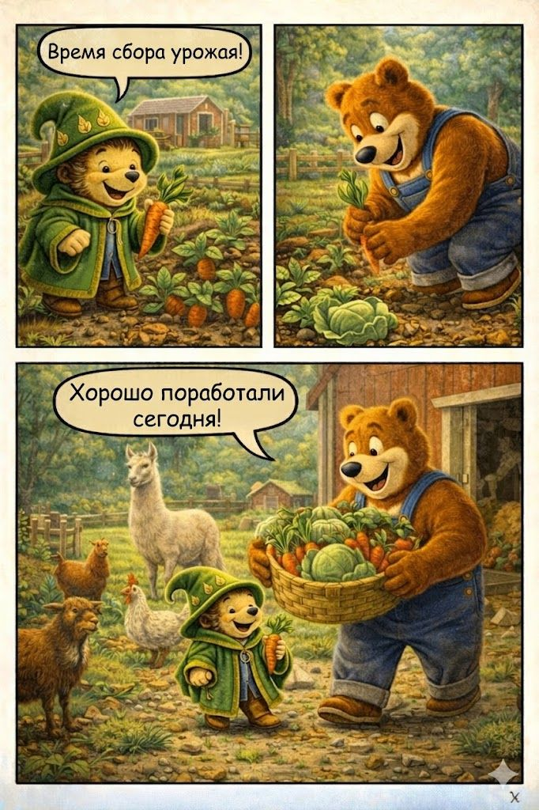
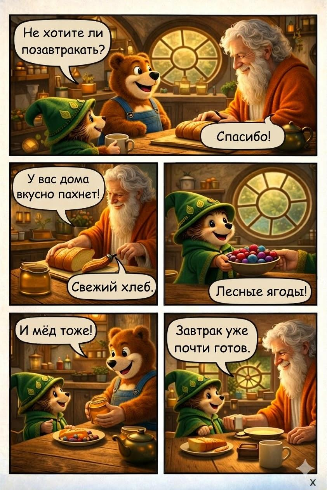
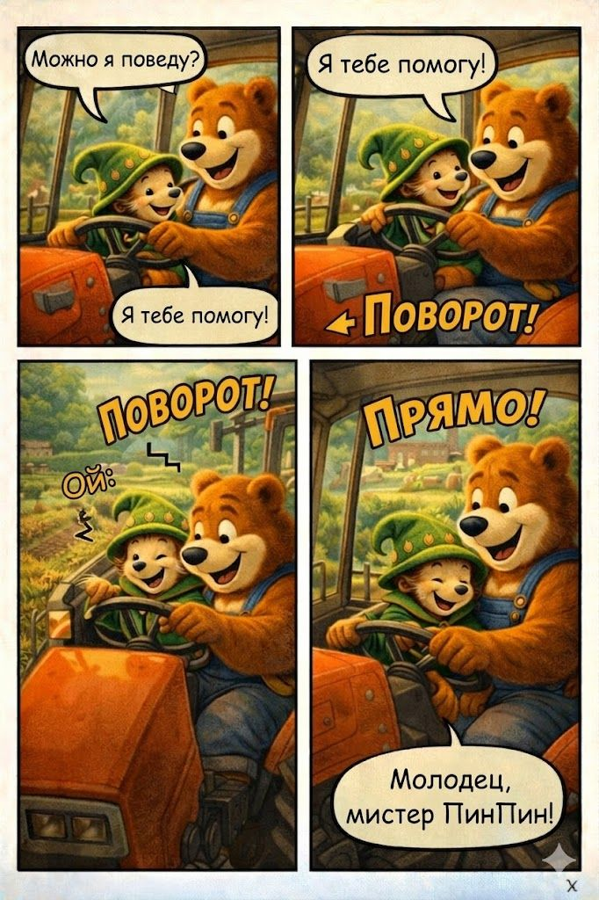
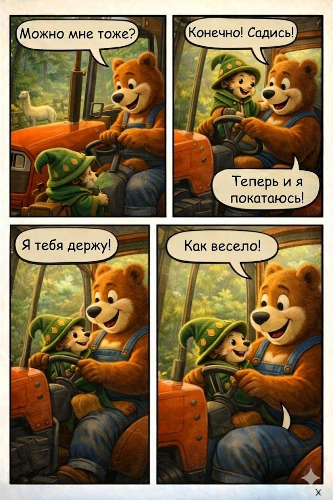
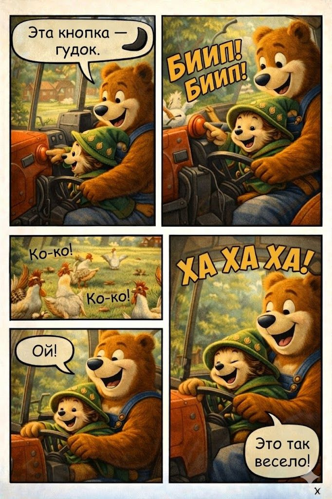
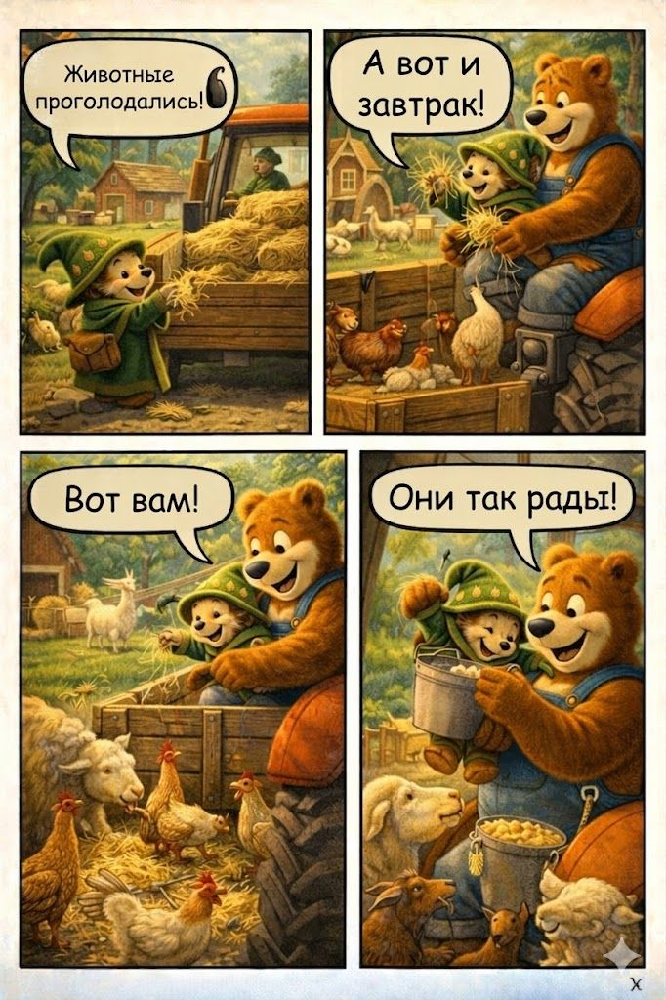

Quiet Morning
The farm day begins softly before the house wakes up.
A gentle comic-style adventure through breakfast, travel, tractor rides, and harvest time. This page is built as a static site so it can be published directly with GitHub Pages.

The gallery below turns the image set into a clean story flow while keeping the original comic artwork front and center.




All panels are shown below in order, optimized for desktop and mobile.



